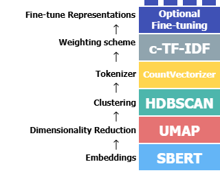
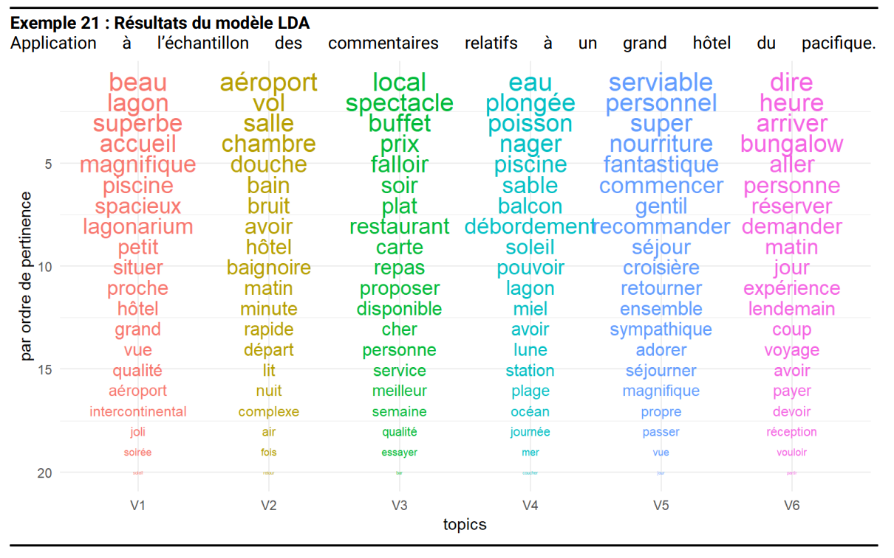

Études qualitatives sur le web (netnographie)
Topic modeling & représentations vectorielles
Paris Dauphine - PSL
Objectifs de la séance
Aujourd’hui, nous allons au-delà de l’analyse de mots isolés pour répondre à deux questions marketing fondamentales :
- De quoi parlent réellement les personnes, consommateurs, clients ?
- Nous verrons comment le Topic Modeling (modélisation de thèmes) peut automatiquement découvrir les grands sujets de discussion (les topics) cachés dans des milliers d’avis.
- Comment la machine peut-elle comprendre le sens des mots ?
- Nous explorerons les Word Embeddings (plongements de mots), la technologie révolutionnaire qui permet aux algorithmes de saisir les nuances et les similarités sémantiques.
💡 L’enjeu
Ces deux approches sont la porte d’entrée vers les analyses les plus avancées et les plus puissantes du marketing digital, notamment les LLMs.
Le problème : comment synthétiser 10 000 verbatims ?
Imaginez que vous avez collecté 10 000 avis sur votre produit.
Les lire un par un est impossible. Comment savoir rapidement quels sont les 5 ou 10 grands thèmes de satisfaction ou d’insatisfaction ?
Pour y répondre, nous devons combiner deux approches :
- Une technologie pour comprendre le sens réel des mots, au-delà des simples comptes : les Word Embeddings.
- Des méthodes pour regrouper les avis en grands thèmes : le Topic Modeling.
Les grandes familles de modèles de thèmes
Approches statistiques (ex: LDA) (Blei, Ng, and Jordan 2003) : Modèles probabilistes qui identifient les thèmes en se basant sur les co-occurrences de mots.
Approches avec métadonnées (ex: STM) (Roberts et al. 2013) : Permettent d’expliquer les thèmes par des variables externes (date, segment client…).
Approches sémantiques (ex: BERTopic) (Grootendorst 2022) : S’appuient sur le sens des phrases (embeddings) pour créer des thèmes plus cohérents.
Des mots aux vecteurs : comprendre les Word Embeddings
De nombreuses illustrations de cette section proviennent de
Jay Alammar – The Illustrated Word2Vec.
La limite du “sac de mots†(Bag-of-Words)
Jusqu’à présent, pour transformer le texte en chiffres, on a surtout compté les mots (approche Bag-of-Words ou TF-IDF).
Le problème : cette approche est “naïve”. Pour elle, les mots “roi”, “reine†et “château†sont aussi différents les uns des autres que les mots “roi†et “camion”. Elle ne comprend pas que certains mots sont sémantiquement proches.
Comment faire pour qu’un ordinateur comprenne que “excellent†est plus proche de “superbe†que de “médiocre†?
L’idée de l’embedding : représenter des concepts par des nombres
Avant de voir comment une machine comprend les mots, imaginons comment représenter une personne en chiffres.
C’est le principe de l’embedding (ou “plongement”).
1. Une seule dimension
Un test peut donner un score unique, par exemple sur l’axe introversion/extraversion.
Ce score devient la première coordonnée du “vecteur de personnalité”.
2. Ajouter de la complexité
Une seule dimension est insuffisante. Ajoutons un autre trait, noté de -1 (introverti) à +1 (extraverti).
On obtient un vecteur à deux dimensions, qui a une direction et une longueur, et capture plus d’informations.

3. Vers N dimensions
Les tests comme le Big Five utilisent au moins 5 dimensions. En machine learning, on peut en avoir des milliers La personnalité devient un vecteur de nombres, chaque valeur représentant un score.
L’idée fondamentale de l’embedding
Un concept complexe (une personne, bientôt un mot) peut être représenté par un vecteur numérique.
Avantage : les machines peuvent mesurer les similarités en comparant ces vecteurs.
La révolution Word2Vec : le sens par le contexte (Mikolov et al. 2013)
Au début des années 2010, une équipe de chercheurs chez Google a proposé un algorithme révolutionnaire : Word2Vec (Mikolov et al. 2013).
Autrement dit, un mot n’a pas de sens isolé :
il prend son sens dans les contextes où il apparaît,
c’est-à -dire les mots qui l’entourent (Harris 1954).
- Le mot banque avec argent, épargne, compte → sens financier.
- Le mot banque avec rivière, eau, berge → sens géographique.
On peut exprimer cela simplement par l’idée que la probabilité d’un mot dépend de ses voisins immédiats :
\[ P(\text{mot} \mid \text{contexte}) \]
où le contexte est constitué des mots voisins dans la phrase.
L’idée fondamentale :
“You shall know a word by the company it keeps†(Firth 1957).
En pratique, Word2Vec entraîne un petit réseau de neurones à prédire les mots du contexte à partir d’un mot central (ou l’inverse).
Les vecteurs associés aux mots s’ajustent pendant l’apprentissage, jusqu’à ce que ceux qui apparaissent dans des contextes similaires se retrouvent proches dans l’espace.
Word2Vec ne “comprend†pas le sens comme un humain :
il exploite uniquement les régularités statistiques des cooccurrences de mots.
Visualiser un embedding
Chaque mot est représenté par un vecteur de nombres (par ex. 50 ou 300 dimensions).
Pris séparément, ces valeurs n’ont pas de sens pour nous.
Mais en comparant plusieurs mots, on voit apparaître des motifs de similarité.
- man et woman → vecteurs proches.
- king et queen → partagent des dimensions → idée de royauté.
- boy et girl → proches sur d’autres dimensions → idée de jeunesse.
- water → se distingue nettement des mots “personnes”.
💡 Les embeddings capturent des régularités invisibles, uniquement à partir des contextes.
Analogies vectorielles
Les vecteurs de mots se combinent algébriquement.
Ce n’est pas magique : la géométrie des vecteurs encode des relations sémantiques et syntaxiques.
- roi – homme + femme ≈ reine
- Paris – France + Italie ≈ Rome
- marcher – marché + chanter ≈ chanté
👉 Avec des bibliothèques comme Gensim en python ou word2vec en R, on peut réellement calculer ces analogies et retrouver les mots les plus proches.
Quelle utilisation dans le marketing ?
Moteurs de recommandation : si un client a aimé un produit décrit par certains mots, on peut lui recommander des produits décrits par des mots aux vecteurs similaires.
Analyse de sentiment : regrouper les avis clients exprimés différemment (super ≈ génial ≈ excellent), pour mieux suivre la satisfaction.
Segmentation clients : utiliser le langage des clients (feedback, SAV, forums) pour créer des clusters basés sur les mots et expressions employés.
Étude de marque et positionnement : comparer les associations implicites entre marques (Nike, Adidas, Puma) et concepts (performance, lifestyle, mode).
Détection de tendances : suivre l’évolution de mots-clés (durable, écologique) pour identifier les thèmes qui montent.
Base des modèles modernes : transformer les mots en vecteurs est la fondation sur laquelle reposent tous les modèles de langage modernes, y compris les LLMs.
Application : le clustering sémantique d’avis clients
L’usage le plus direct des embeddings pour un projet en marketing par exemple est de regrouper des avis qui se ressemblent par le sens, et non plus par les mots-clés.
La méthode en 3 étapes
Vectoriser : chaque avis client est transformé en un vecteur numérique à l’aide d’un modèle pré-entraîné.
Clusteriser : un algorithme de clustering (ex: K-Means, HDBSCAN) est appliqué sur ces vecteurs. Il va créer des groupes où les vecteurs sont proches les uns des autres.
Interpréter : pour comprendre un cluster, on lit quelques avis représentatifs. On découvre ainsi des thématiques très fines.
Un exemple concret
Un topic model pourrait créer un thème large sur la “livraison”. Le clustering sémantique pourra, lui, identifier des sous-groupes très distincts :
- Cluster 1 : “Le colis est arrivé en avance, super !”
- “Livraison reçue 2 jours avant la date, je suis ravie.”
- “Impressionné par la rapidité d’expédition.”
- Cluster 2 : “Le livreur n’a pas été professionnel.”
- “Le colis a été jeté par-dessus le portail.”
- “Le livreur n’a même pas sonné et a mis un avis de passage.”
- Cluster 3 : “Problèmes avec le point relais.”
- “Mon point relais était fermé, j’ai dû faire un détour.”
- “Impossible de récupérer mon colis, le commerçant ne le trouve pas.”
Le clustering sur embeddings ne remplace pas le Topic Modeling, il le complète en offrant une granularité sémantique souvent inaccessible avec les modèles de thèmes traditionnels.
Comment apprend-on des embeddings de mots ?
L’idée fondamentale : la signification d’un mot se comprend à partir des mots qui apparaissent fréquemment autour de lui.
Un petit réseau de neurones est entraîné à résoudre une tâche simple de prédiction, répétée des millions de fois sur un grand corpus (comme Wikipedia).
- Le modèle lit chaque phrase et repère les mots voisins d’un mot donné.
- Il apprend à associer un mot et son contexte.
- En ajustant ses paramètres, il construit des vecteurs numériques qui reflètent les régularités du langage (genre, pluriel, royauté…).
- Résultat : des mots qui apparaissent dans des contextes similaires obtiennent des vecteurs proches.
Deux variantes de Word2Vec
- CBOW (Continuous Bag of Words)
Prédit le mot central à partir de son contexte.- Avantage : rapide à entraîner.
- Adapté aux grands corpus.
- Avantage : rapide à entraîner.
- Skip-gram
Prédit les mots du contexte à partir du mot central.- Avantage : plus performant pour les mots rares.
- Capture mieux les relations fines entre mots.
- Avantage : plus performant pour les mots rares.

Modèles liés et évolutions
GloVe (Pennington, Socher, and Manning 2014)
Basé sur une grande matrice de cooccurrences factorisée (SVD).
→ Plus “statistique†que neuronal.FastText (Bojanowski et al. 2017)
Améliore Word2Vec en apprenant aussi des vecteurs pour les n-grams de caractères (utile pour variations orthographiques).- Très rapide à entraîner.
- Utilisé par exemple à l’Insee pour la classification automatique.
- Très rapide à entraîner.
ELMo (Peters et al. 2018)
Premier modèle à produire des vecteurs contextualisés :
le vecteur d’un mot dépend de la phrase.
→ Prépare le terrain pour les Transformers (BERT, GPT…).
Les limites de Word2Vec et des embeddings statiques
Vecteurs statiques : un mot = un seul vecteur, appris une fois pour toutes.
→ banque (finance vs rivière) est toujours représenté par le même vecteur.Pas de contexte global : Word2Vec ne regarde qu’une petite fenêtre (ex. ±5 mots).
→ Impossible de capter des dépendances à longue distance.Pas de prise en compte de l’ordre : l’embedding ignore la syntaxe exacte d’une phrase.
Peu flexible : une fois entraînés, les vecteurs ne s’adaptent pas à de nouveaux usages du langage.
💡 Résultat : les embeddings classiques captent des proximités sémantiques utiles, mais ne peuvent pas distinguer les sens multiples d’un mot.
Vers les Transformers et l’attention
Les modèles modernes (Transformers) introduisent le mécanisme d’attention, qui permet de :
- Donner à chaque mot une représentation contextualisée (le vecteur de banque change selon la phrase).
- Relier un mot à d’autres, même très éloignés dans la phrase.
- Mieux modéliser la syntaxe et la sémantique en même temps.
➡️ Prochaine séance : comprendre comment l’attention révolutionne les modèles de langage.
Les applications modernes
Des embeddings aux thèmes : l’approche BERTopic
Les embeddings nous donnent la proximité sémantique. Un nuage de 10 000 points-vecteurs reste inexploitable pour un décideur.
Le défi : comment structurer ce nuage de sens en thèmes clairs et interprétables ?
BERTopic est un pipeline modulaire qui transforme ce nuage en thèmes lisibles (Egger and Yu 2022) :
- Il regroupe les avis sémantiquement proches (clustering).
- Il extrait les mots/expressions qui décrivent le mieux chaque groupe.
- Il produit des thèmes cohérents et faciles à nommer.
C’est une approche “embedding-first†qui privilégie le sens sur la simple co-occurrence de mots.

Le workflow BERTopic en 4 étapes
BERTopic n’est pas un monolithe, mais une “recette†intelligente qui combine plusieurs algorithmes (An, Oh, and Lee 2023).
1. Vectorisation (Embeddings)
- Objectif : transformer chaque avis en un point dans un “espace sémantique”.
- Outil : un modèle pré-entraîné (ex:
Sentence-BERT) qui comprend déjà le français. - Résultat : une liste de vecteurs.
2. Réduction de dimension (UMAP)
- Objectif : créer une “carte†2D de ces milliers de points, en préservant les voisinages (les avis proches restent proches).
- Pourquoi ? facilite grandement le travail de l’algorithme de clustering.
3. Clustering (HDBSCAN)
- Objectif : identifier automatiquement les “îlots†(clusters) denses sur cette carte.
- Force : n’oblige pas à choisir le nombre de thèmes à l’avance et identifie les outliers (avis uniques ou bruit, classés en
-1).
4. Représentation des thèmes (c-TF-IDF)
- Objectif : pour chaque “îlot”, trouver les mots/expressions les plus caractéristiques.
- Comment ? une variante de TF-IDF qui traite chaque cluster comme un “document†et le corpus entier comme la “collection”.
En pratique : faut-il entraîner ses propres embeddings ?
Une fois le principe compris, la question opérationnelle se pose : comment obtenir ces fameux vecteurs ?
1. Entraîner son propre modèle (ex: Word2Vec)
- Principe : on apprend les vecteurs de mots à partir de zéro, en utilisant uniquement les textes de son propre corpus (ex: 10 000 avis clients).
- Avantage : les vecteurs sont parfaitement adaptés au jargon et au contexte spécifique de votre marque.
- Inconvénient majeur : nécessite d’énormes volumes de données (des millions de mots) pour apprendre des relations sémantiques de qualité.
2. Utiliser un modèle pré-entraîné (BERT, CamemBERT…)
- Principe : on télécharge un modèle qui a déjà été entraîné sur des téraoctets de texte (ex: tout Wikipédia). Ce modèle “sait†déjà comment fonctionne le langage.
- Avantage : extrêmement puissant et performant, même sur des corpus de petite taille. Il a une compréhension profonde de la sémantique générale.
- Inconvénient : peut être moins performant sur un jargon très spécifique absent de ses données d’entraînement (rare pour des avis clients).
La bonne pratique
Pour votre projet, ne ré-inventez pas la roue. Utilisez des modèles pré-entraînés (via des librairies comme sentence-transformers en Python) pour transformer vos avis en vecteurs.
Les approches classiques en contexte (LDA, STM…)
Qu’est-ce que le LDA ? L’intuition
Imaginons que LDA est un bibliothécaire stagiaire à qui on demande de classer 10 000 articles en 5 thèmes qu’il doit inventer lui-même.
1. Il crée les thèmes (Thèmes → Mots)
Le stagiaire lit et remarque que certains mots apparaissent souvent ensemble.
- “Planète”, “fusée”, “étoile†â il crée un post-it “Thème A”.
- “But”, “ballon”, “équipe†â il crée un post-it “Thème B”.
À la fin, un thème n’est qu’un “sac de mots†qui ont tendance à cohabiter.
2. Il étiquette les documents (Documents → Thèmes)
Maintenant, il prend chaque article et regarde les mots qu’il contient.
- Un article parle de “fusée”, “planète†et un peu de “match”.
- Il l’étiquette avec une “recette†: 70% Thème A, 30% Thème B.
À la fin, un document est simplement un mélange de ces thèmes.
Ce que LDA donne au final
L’algorithme devine automatiquement les thèmes cachés dans les textes et la recette de chaque document. C’est un trieur automatique ultra-performant.
Comment fonctionne le LDA ?
LDA imagine que chaque document est écrit en suivant une recette probabiliste : documents → thèmes → mots.
🔠Étapes simplifiées
On choisit une proportion de thèmes pour le document (θ).
→ ex. Avis hôtel : 50% Service, 30% Chambre, 20% Prix.Pour chaque mot du document :
- on pioche un thème latent (z),
- puis on pioche un mot dans le vocabulaire de ce thème (β).
- on pioche un thème latent (z),
Répété des milliers de fois, cela reconstitue le texte.
En observant beaucoup de textes, l’algorithme “devine†les thèmes.

Dictionnaire des symboles LDA
- Contexte du Corpus
- M : le nombre total de documents dans votre collection.
- N : le nombre de mots dans un document donné.
- Hyperparamètres (les réglages du modèle)
- \(\alpha\) (alpha) : règle la diversité des thèmes par document.
- \(\eta\) (eta) : règle la diversité des mots par thème.
- Paramètres (ce que le modèle apprend)
- \(\theta\) (theta) : la “recette†de thèmes pour un document.
- \(\beta\) (beta) : les mots typiques d’un thème.
- Variables (le processus de génération)
- \(z\) : le thème latent (caché) assigné à un mot.
- \(w\) : le mot observé que l’on peut lire.
Le Topic Modeling en marketing
La littérature marketing montre des usages variés et utiles du topic modeling.
Une revue de 61 études confirme son adoption et trace des pistes de recherche (Reisenbichler and Reutterer 2019).
Domaines d’application
- Segmentation & profiling (voix client, personas)
- Analyse de communautés (forums, réseaux sociaux)
- Systèmes de recommandation
- Publicité & ciblage (mots-clés, messages)
- Veille & tendances (évolution des thèmes)
Opportunités de recherche
- Données multi-sources & dynamiques (texte + achats, social, temps)
- Coupler LDA avec des modèles prédictifs (churn, CLV, ventes)
- Mieux évaluer les thèmes (cohérence, exclusivité, stabilité)
- Explorer des variantes (STM, BERTopic) selon le cas d’usage
Visualiser les thèmes avec ggplot2 (Balech and Benavent 2019)

Visualiser les thèmes avec LDAvis
💡 Une fois le modèle entraîné, on peut explorer les thèmes avec des outils interactifs :
- Python : Gensim + pyLDAvis
- R : LDAvis
Chaque bulle représente un thème.
Les mots les plus fréquents apparaissent à droite.

Limites du Topic Modeling (et quand aller plus loin)
Limites pratiques
- Choix du nombre de topics (K) : compromis interprétabilité / granularité
- Qualité des thèmes : dépend du prétraitement & des hyperparamètres
- Cohérence sémantique : certains topics sont “fourre-tout”
- Statique : difficulté à suivre finement l’évolution des thèmes
- Polysémie non résolue : un mot = un même rôle selon le topic
Évaluer & améliorer
- Utiliser des métriques de cohérence de topics (ex. topic coherence)
- Tester plusieurs K et stabiliser (bootstrap / réplications)
- Ajouter du guidage (Seeded/Guided LDA) ou des covariables (STM (Roberts et al. 2013))
Quand passer à des approches récentes
- STM : intégrer covariables (temps, segment, campagne) pour expliquer/faire varier les thèmes (Roberts et al. 2013)
- BERTopic : s’appuyer sur des embeddings (BERT) + clustering pour des thèmes souvent plus cohérents (Grootendorst 2022)
- Embeddings/LLMs : capter la sémantique contextuelle, faire de la recherche sémantique, du résumé ou de la Q&A
LDA est excellent pour cartographier des thèmes.
Dès que le contexte et la nuance deviennent critiques, on gagne à passer vers STM / BERTopic, puis embeddings & LLMs.
L’impact du pré-traitement sur la qualité des thèmes
La qualité de vos thèmes dépend directement des choix faits lors du nettoyage des données (séance 4). Deux questions sont cruciales pour votre projet :
Faut-il garder le nom de la marque ?
Imaginez analyser des avis sur “Decathlon”.
- Garder “decathlon†:
- Risque : peut créer un thème “bruit†autour de la marque elle-même, captant peu d’informations utiles.
- Avantage : permet de voir à quels concepts la marque est le plus souvent associée.
- Supprimer “decathlon†:
- Avantage : force le modèle à se concentrer sur les concepts transversaux (livraison, qualité, prix) de manière plus claire.
- Risque : peut faire perdre un contexte si les gens comparent (“mieux que decathlon”).
💡 Recommandation : Pour une première analyse des thèmes généraux, retirez le nom de la marque et ses variantes.
Pourquoi utiliser les n-grams ?
Le “sac de mots†simple sépare des concepts qui vont ensemble.
- Sans n-grams :
- “service†et “client†sont deux mots séparés.
- Le thème du SAV risque d’être dilué dans un thème sur les “clients†et un autre sur les “services”.
- Avec n-grams (bigrams) :
- L’entité
service_clientest traitée comme un seul “mot”. - Permet de faire émerger des thèmes beaucoup plus précis et actionnables comme :
service_client,point_relais,carte_fidélité.
- L’entité
💡 Recommandation : toujours identifier les expressions fréquentes (collocations) et les fusionner en n-grams avant de lancer un LDA.
Partie 5 : Synthèse et action pour votre projet Quarto
De la sortie brute à l’insight : l’art de nommer les thèmes
Un modèle de topic modeling fournit des listes de mots. Le vrai travail de l’analyste marketing commence ici : traduire ces listes en concepts actionnables.
1. La sortie brute de l’algorithme
L’outil vous donne des “sacs de mots†statistiquement cohérents.
- Thème A : livraison, commande, reçu, colis, retard, transporteur, point relais
- Thème B : magasin, vendeur, conseil, passage, caisse, accueil, personnel
- Thème C : qualité, produit, déçu, cassé, retour, remboursement, service client
- Thème D : prix, cher, promotion, réduction, abordable, euros, carte fidélité
2. L’interprétation et le nommage marketing
Votre rôle est de synthétiser chaque thème en un concept métier.
- Thème A â Expérience de Livraison
- Thème B â Relation Client en Point de Vente
- Thème C â Qualité Produit & Service Après-Vente
- Thème D â Perception du Rapport Qualité-Prix
💡 Le nommage est une hypothèse d’analyse
Nommer un thème, c’est formuler une hypothèse sur ce dont les clients parlent réellement. C’est cette “étiquette†qui sera utilisée dans vos recommandations managériales, pas la liste de mots. On peut désormais utiliser les LLMs pour nous aider à formuler cette hypothèse.
Ce qu’en dit la recherche
Les articles récents confirment l’évolution des pratiques : des modèles statistiques vers des approches sémantiques basées sur les embeddings.
Approches “classiques†: cartographier les thèmes
- NMF et LDA sont des choix fiables pour une première cartographie des sujets, notamment sur des textes courts où NMF surpasse souvent LDA (Egger and Yu 2022; Albalawi, Yeap, and Benyoucef 2020).
- Cependant, leur limite est une plus faible nuance sémantique, car ils ne capturent pas le contexte comme les embeddings (Papadia et al. 2023).
Intégrer le contexte client : STM
- Le Structural Topic Model (STM) est unique pour sa capacité à intégrer nativement des métadonnées (date, segment client, note…).
- Il permet d’expliquer comment et pourquoi la prévalence des thèmes varie en fonction des caractéristiques des clients, ce que les autres modèles ne font pas directement (Fresneda, Burnham, and Hill 2021).
L’approche sémantique moderne : BERTopic
- BERTopic excelle pour découvrir des thèmes nuancés en se basant sur le sens des phrases, ce qui est idéal pour les textes courts et bruités comme les avis en ligne ou les posts sur les réseaux sociaux (Egger and Yu 2022).
- Son approche modulaire (Embeddings -> Clustering -> Description) est très efficace.
Un cas d’usage marketing direct
- Une méthode très pratique consiste à séparer les avis par note (ex: 1-2★ vs 4-5★) avant d’appliquer BERTopic sur chaque groupe.
- Cela permet d’extraire de manière très précise les arguments spécifiques aux “pour†et aux “contre†d’un produit, en se basant sur le sens réel des critiques et des éloges (An, Oh, and Lee 2023).
Synthèse : quelle méthode choisir pour votre projet ?
Chaque famille de modèles a ses forces. Le choix dépend de votre question de recherche marketing.
| Besoin Analytique | Approche Recommandée | Forces et Limites |
|---|---|---|
| Cartographier les grands sujets d’un large corpus | NMF ou LDA | Forces : rapide, donne une bonne vue d’ensemble. NMF est souvent performant sur textes courts (Egger and Yu 2022; Albalawi, Yeap, and Benyoucef 2020). Limite : moins de nuance sémantique (ne capture pas le contexte). |
| Expliquer les thèmes par des métadonnées (date, segment, note…) | Structural Topic Model (STM) | Force : le seul modèle qui intègre nativement les covariables pour expliquer la prévalence et le contenu des thèmes (Fresneda, Burnham, and Hill 2021). Limite : Plus complexe à mettre en œuvre (nécessite des données structurées). |
| Découvrir des thèmes nuancés basés sur le sens (paraphrases, synonymes) | BERTopic | Force : capture le sens contextuel, idéal pour les textes courts et bruités (avis, réseaux sociaux) (Egger and Yu 2022). Limite : moins direct pour lier les thèmes aux métadonnées (nécessite une analyse post-hoc). |
| Analyser les “pour†et les “contre†d’un produit | BERTopic (appliqué séparément sur les avis 1-2★ et 4-5★) | Force : Pprmet de créer des clusters très spécifiques aux critiques vs. aux éloges, en se basant sur le contenu sémantique des arguments (An, Oh, and Lee 2023). |
Comment la machine “compare†les personnalités ?
Maintenant que chaque personne est un vecteur de nombres, on peut utiliser un outil mathématique simple pour calculer à quel point elles sont “proches†en termes de personnalité : la similarité cosinus.
1. L’intuition : l’angle 📐
L’idée n’est pas de mesurer la distance entre les points, mais plutôt l’angle entre les flèches (vecteurs).
2. Le calcul en action 💡
La fonction
cosine_similaritynous donne un score entre -1 (opposés) et 1 (identiques).On voit que Jay est bien plus similaire à la Personne #1 qu’à la Personne #2, que ce soit avec 2 ou 5 dimensions !
L’avantage clé
Peu importe le nombre de dimensions (2, 5, plusieurs centaines ou milliers pour les modèles de langue !), la similarité cosinus nous donne un score unique et fiable pour quantifier la ressemblance entre deux concepts. C’est la base de nombreuses applications : moteurs de recommandation, recherche sémantique… et bien plus encore.